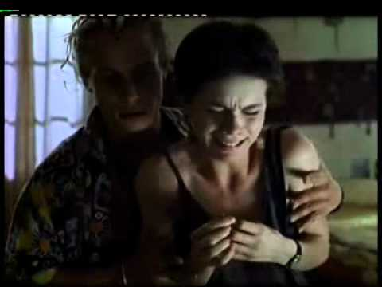

<!-- Ejercicio 27. Crea una página web que simule una animación, es decir, que vaya
cambiando de imagen cada segundo utilizando dos imágenes
seguidas.document.images[].src y setTimeout()
 -->

<!DOCTYPE HTML PUBLIC "-//W3C//DTD XHTML 1.0 Transitional.dtd">
<htmlxmlns="http://www.w3.org/1999/xhtml">
	<head>
		<meta htpp-equiv="Content-type" content="text/html;"  charset="utf-8" />
		<title>Ejercicio 27: Imagen animada </title>
		
	</head>
	<body>
		<h1>Imagen cambiante</h1>
		 
		
		<script type="text/javascript">	
			var estado=true; 
			setTimeout("cambio()",1000); 
			
			function cambio() { 
				estado=!estado; //cambiara el estado
				if(estado==true) 
					img.src="triste.jpg"; //no cierro corchetes asi coge las dos
				else 
					img.src="alegre.jpg" ;
				setTimeout("cambio()",1000); 
				}
					
		</script>
	</body>
</html>